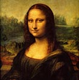

Where Do We Come From? What Are We? Where Are We Going? This is Paul Gaugin’s most famous painting, and he considered it his masterpiece.
-
Romanticism
Romanticism was an artistic, literary and intellectual movement that originated in the second half of the 18th century in Europe, and gained strength in reaction to the Industrial Revolution
-
Realism
Realism as a tendency in 19th century art was related to similar movements in the theatre, literature and opera. All emphasized the depiction of everyday subjects, but by no means always discarding classical
-
High Renaissance
High Renaissance is the period denoting the apogee of the visual arts in the Italian Renaissance. The High Renaissance period is traditionally taken to begin in the 1490s, with Leonardo's fresco